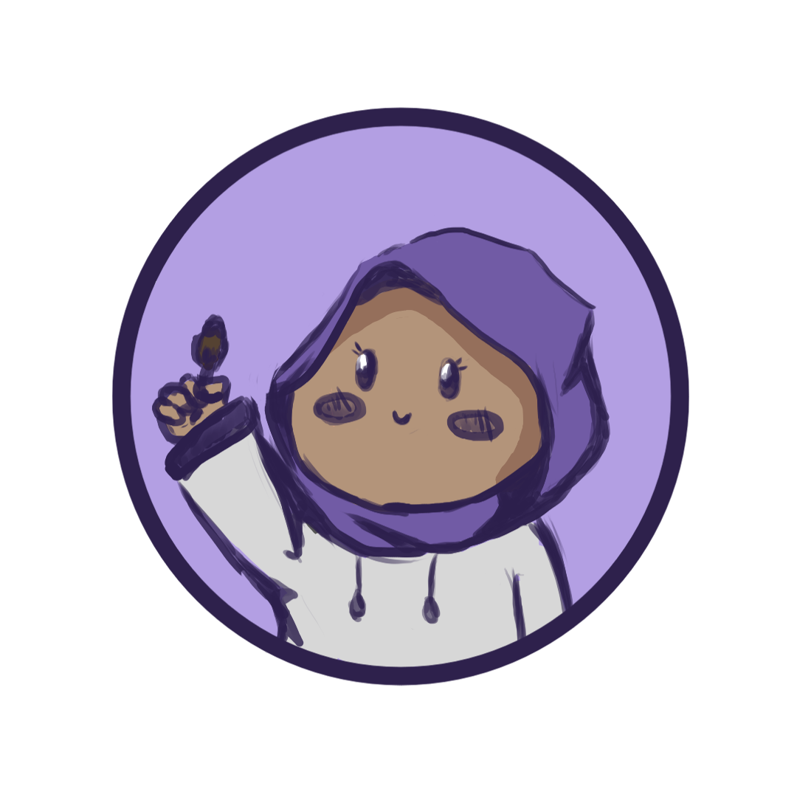

Welcome to SketchyCorner!
Hello and welcome to my humble corner of creativity! I'm Fira, a student who finds joy and inspiration in the art of sketching. Here, you'll discover a collection of sketches that reflect my journey as a budding artist, capturing the essence of my learning process and passion for drawing.
What to Expect
As you explore my gallery, you'll witness the evolution of my skills and the exploration of my artistic voice. From simple pencil sketches to more intricate doodles, each piece is a testament to my dedication to honing my craft and expressing myself through the medium of sketching.
View the gallery!Connect with me
I'm thrilled to share my sketches with you and would love to hear your thoughts, feedback, and suggestions. Whether you have questions about my process, tips for improvement, or just want to say hello, feel free to reach out—I'm always eager to connect with fellow art enthusiasts and learners like myself.
Come and reach out!